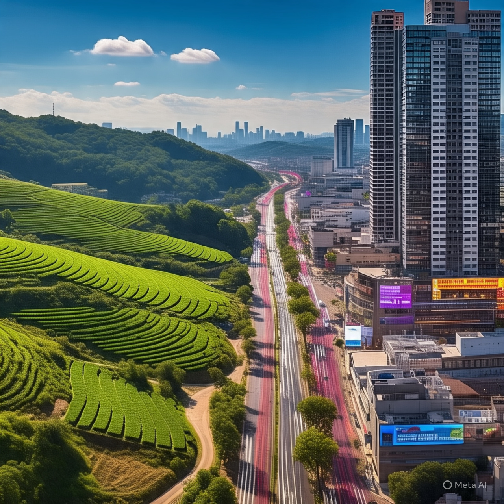
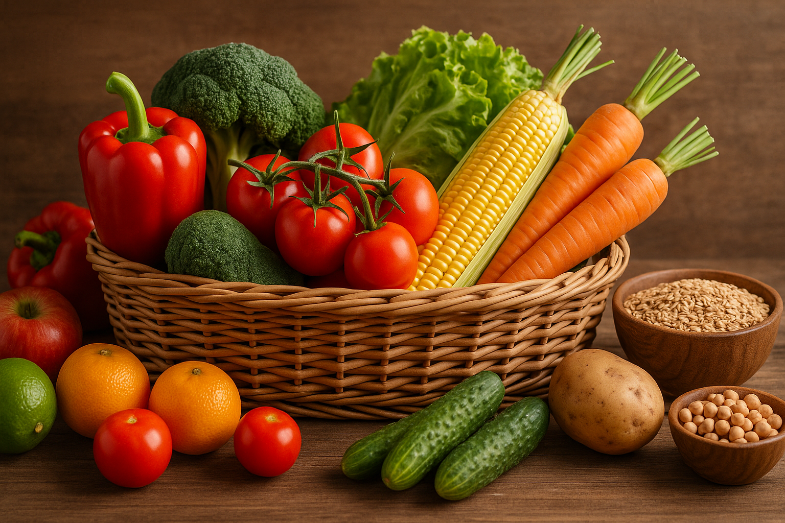

Campo e Cidade: Conexão que Alimenta, Ensina e Transforma
Este site foi criado para mostrar como o campo e a cidade estão conectados e se ajudam todos os dias.
Aqui, você vai encontrar conteúdos que valorizam os dois lados, mostrando como essa troca faz parte da nossa rotina — seja na comida que chega à mesa, nos eventos culturais ou nas histórias de quem vive nesses dois mundos.
A ideia é celebrar essa união e entender melhor como o campo e a cidade caminham juntos.